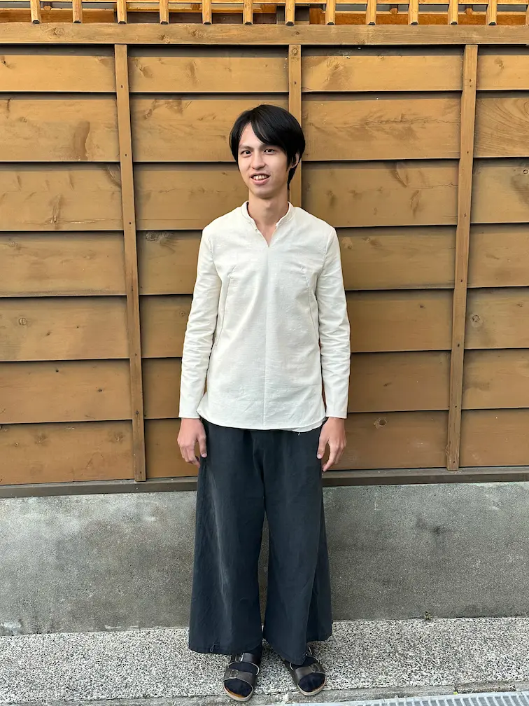
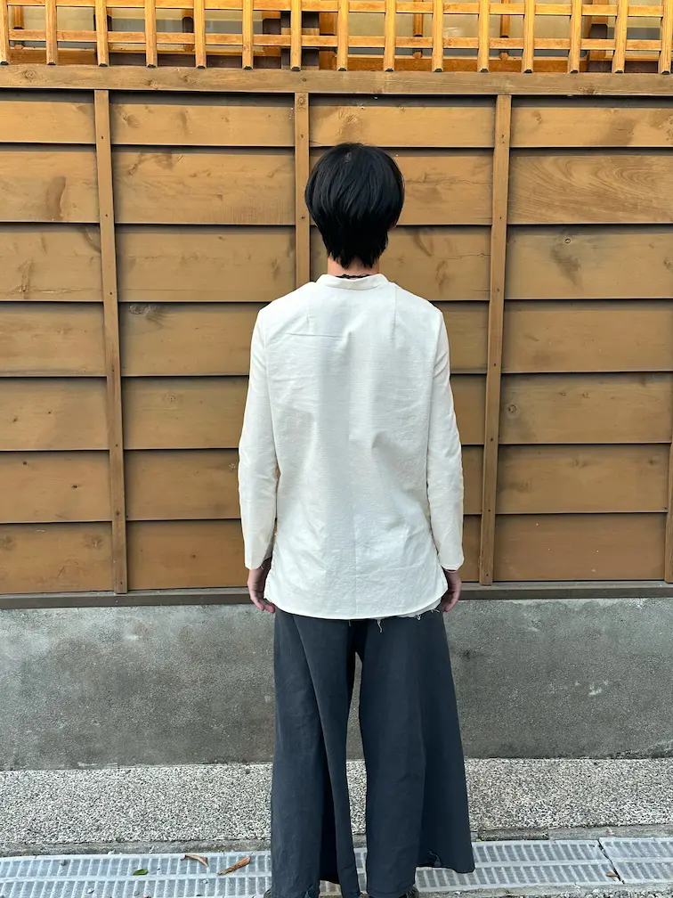
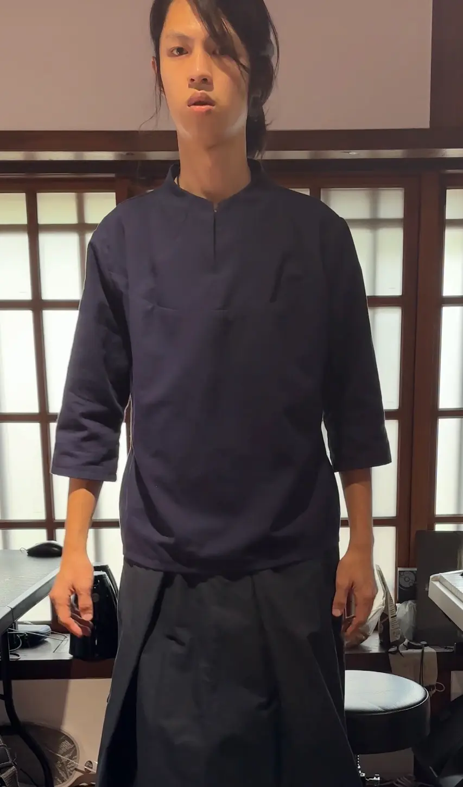
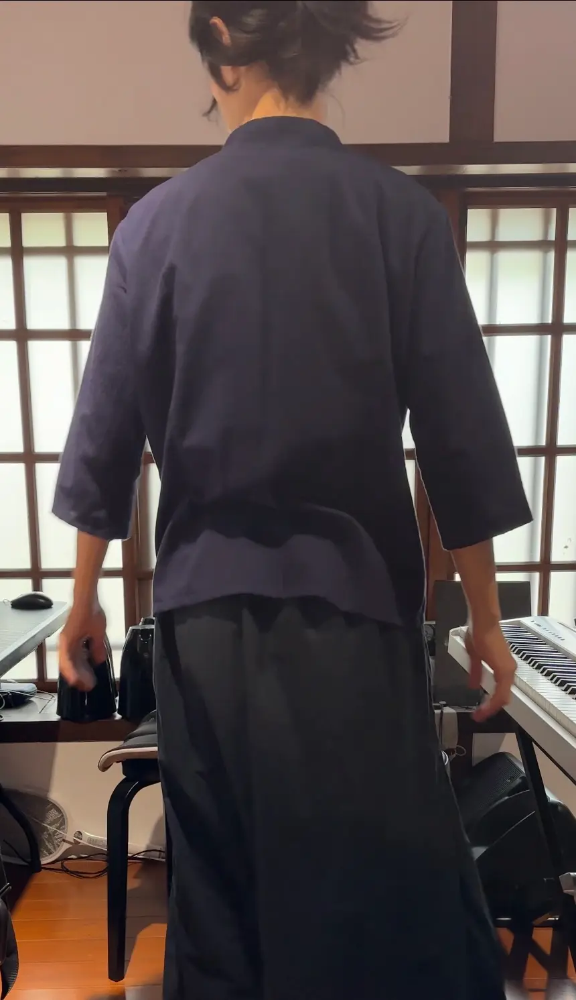
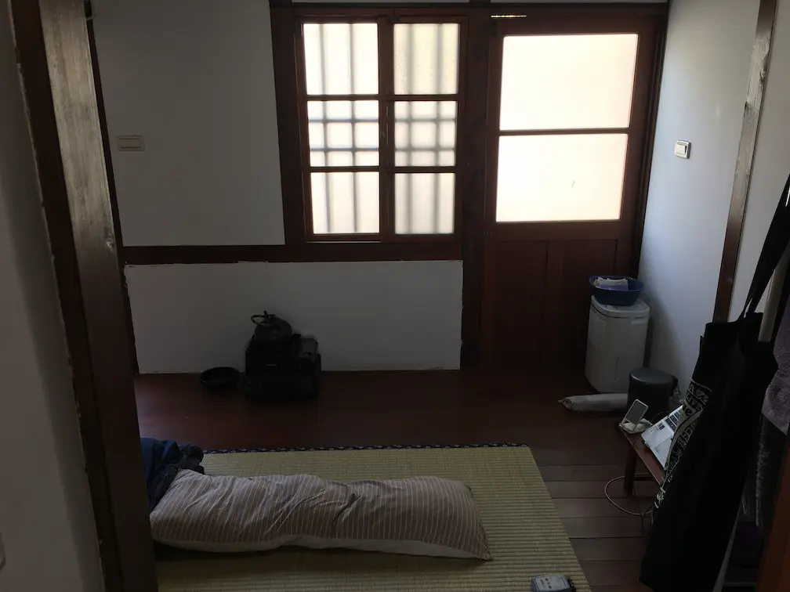
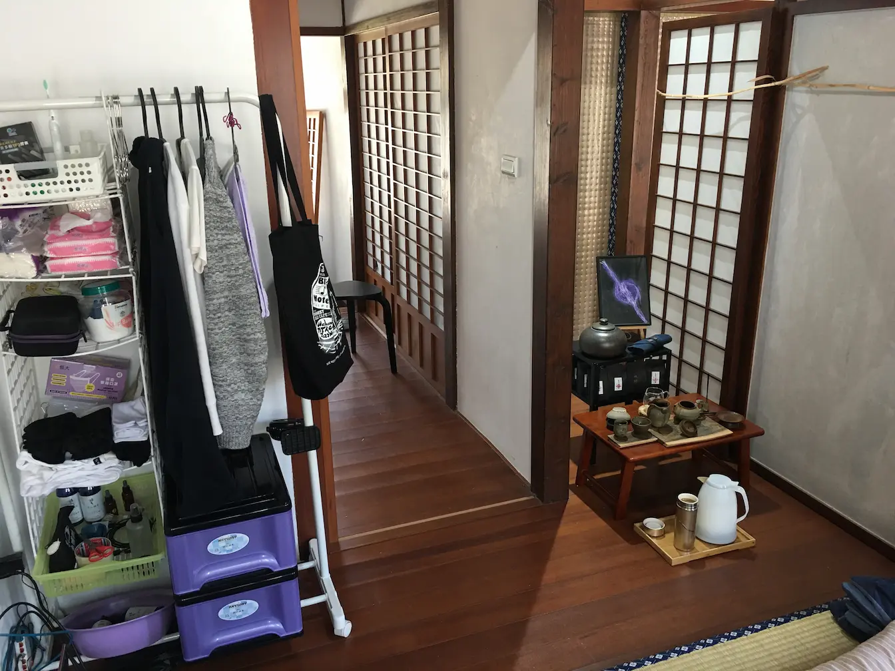

我的第一件「手作」衣服

2023年底的某天下午，我看到老闆娘帶了一疊自製的漂亮茶巾來到《若晞茶空間》，很心動的我想買幾條自己泡茶時使用，但是她以「這是茶會要用的，不是給你個人使用的」為由不賣。
我很不爽，決定自己做。
於是在蝦皮找看起來很像的布料，想買回來自己手縫。
「蝦皮買布」、「手縫」，現在看到這些關鍵字，不禁覺得當時的想法真是天真😅
布料送達之後，打開一看，完全不是我想要的質感😵
看著這塊與我想像的樣子相去甚遠的布料，思考著該怎麼辦，才不會讓它變成倉庫角落的灰塵集中地時，我突然有了大膽的想法——這些布雖然不適合做茶巾，但有沒有機會用來自己做衣服呢🤔
於是我花了一天上網搜尋自己做衣服的相關資料，包含可行性、需要的技術、工具等，發現原來自己做衣服完全是可以的，而且網路上教學資源非常豐富！
隔天我馬上列出工具清單，衝去台南西門市場，逛了一圈後，有點害怕地走進材料行，一一買下我列舉的工具。還好材料行的老闆娘講話超溫柔又很有耐心，讓我對跨出的第一步安心了不少☺️
而材料行隔壁，就是布料漂亮品質又好的布料行，老闆總是熱情介紹，精準推薦適合我的布料。且日後回購時，只要我分享成品照給老闆看，他都會大力稱讚我做的衣服😊
回家後，我馬上照著教學，趴在房間地上，從原型版開始，繪製第一件茶服的版型，然後熨燙、裁布、縫製（當時也太有毅力了吧！到底怎麼辦到的😮 ）

因為我當時還沒有縫紉機，所以整件衣服都用手縫！
兩天之後，勉強完成了一件可遠觀，不可實穿的——我的第一件完全「手作」衣服🥳


這件衣服完成後大家都嚇了一跳，原來衣服還能這樣做嗎！而且沒事怎麼會有自己做衣服的想法？！
創辦人看了之後大表支持，還說我可以成為他的「御用設計師」，做出屬於我們獨一無二的茶服😇
於是，我在若晞有了一間工作室、一台縫紉機，以及大量時間可以研究服裝製作🥰

後來我也完成了一整套茶服的設計，甚至找了成衣廠，用我設計的版型量產了兩色、兩尺寸，總共400件的茶服外套！
我自己最喜歡的是這款「連身立領茶服」，把衣服的領片和身片合而為一，透過剪裁營造出彷彿有領子的立體感，讓整件衣服盡量減少縫線，呼應茶道追求空靈、簡潔的精神。


在我離開若晞半年後，店長還傳訊息問我當初做這件衣服的布料在哪裡買的、是哪款布料，說他們打算以此為樣本，找西服店少量訂製🙄
雖然對他們的做法感到無言，我還是回傳了購買資訊，順便把這件衣服的版型圖檔一起給她。
而回到最一開始，買不到很不爽的茶巾，當然也要自己做啦～
我仔細研究了老闆娘的茶巾作法——透過將兩邊往中線折，再對折來達成四層厚度——真是巧妙的設計！

於是我把這個方法學起來，並稍加改良，在中間夾了厚胚布，讓茶巾更硬挺，並且完全不車明線，以保持極簡的視覺效果。

不只完成了我想要有漂亮茶巾的小小心願，還接到訂單，外銷了呢😄

同場加映：意外捍衛居住權的故事
我製作出的第一件衣服，除了是開啟縫紉之路的里程碑外，在當時，也幫助我順利度過了一次讓我懷疑人生的重大危機😢
剛來到若晞茶空間工作時，原本我和兩位同事一起同住在園區。大約半年後，創辦人覺得管理起來太麻煩，決定把我們都趕出去，自己想辦法解決居住問題。後來又覺得還是應該要有人住在園區裡，能隨時照應（免費保全？），因此最後決定將我一人留下。
於是我在放假日回到台中向我爸媽「募款」購買洗衣機（之前都借用同事的，他要搬走了）。
同事搬離後，室內空間需要重新規劃，於是店長便問我能不能從現在的居住空間搬到玄關。
？？？
我當時的「房間」面積約為兩塊標準榻榻米再多一點，粗估一坪出頭吧。而玄關雖然不是我的個人空間，但可以讓我放收納櫃、背包和鞋子。


現在店長要我從一坪多的房間搬到更小的玄關住？有沒有搞錯？！

於是我馬上回答：「你叫我搬去玄關，我就跟你翻桌！」
當下店長好像嚇到了，她直接離開，對話就此結束。
沒想到，在我回家「募款」，並訂購洗衣機的隔天，店長居然在內部會議時突然說「她認為若晞園區還是不要住人比較適合（意思是要我也搬出去）」，當下創辦人被說服，也跟著改變決策。
！！！
我當下震驚到說不出話。
店長完全知道我為了繼續住下來而特地回家「募款」，洗衣機都已經下訂了，她還在眾人面前這麼做，到底有何居心？？
更何況，我那不足法定最低薪資一半的薪水，扣掉房租之後，還有辦法活嗎🤷♀️
於是，我決定裝死到底不搬家。如果有人來問我，就說我還沒找到房子租！（還好都沒有人來問）
然而，就在我死賴著不搬走的這段期間，第一件手作衣服誕生了！
得到了創辦人「御用設計師」的頭銜後，我跑去問店長能不能給我一個空間當做衣服工作室，她不僅答應了，還附贈一台若晞公用的 iMac (Retina 5K, 27-inch) 給我用！
就這樣，我不僅成功捍衛了一坪房間的居住權，還得到了空間大升級，得以打造專屬工作室，甚至他們還買了一台好用的縫紉機給我，真是可喜可賀，可喜可賀🥳
這件事之後，我也學會了「不論『我覺得』情況有多奇怪、多不合理，都要和顏悅色地跟對方說話，才不會在奇怪的地方被突然捅一刀。」畢竟事情有可能只是我覺得怪，其他人都覺得很合理呀。
說不定也是因為這樣，不論同事做了什麼，我們始終保持著良好的互動關係，甚至在他被我告狀而受到停職處分後，還會跑來找我訴苦吧🤣